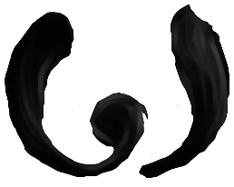
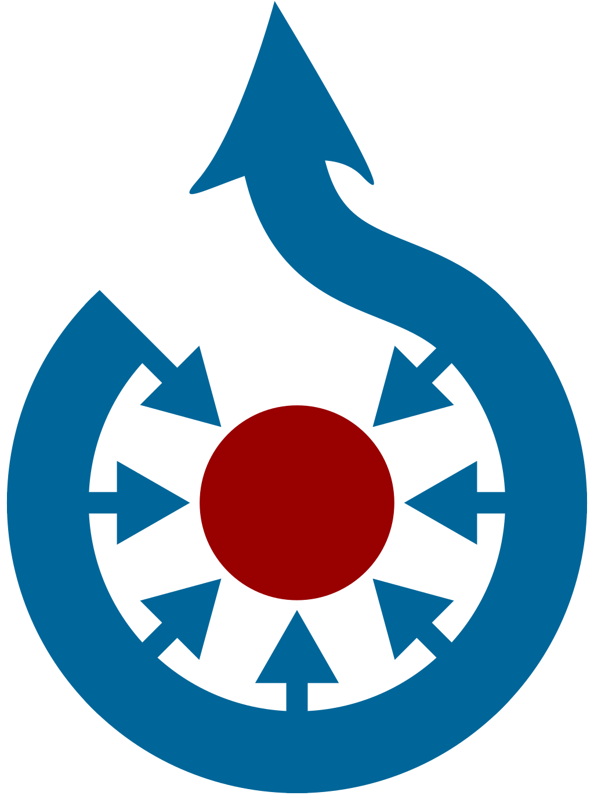

The reel is loading. If it does not appear, watch it on Facebook.
Nutshell Today · Reel
Saving the Chak language
A short film about the project and the community behind it.
Watch on FacebookProject ShoiUku documents, digitises and promotes the Chak language, spoken by about 4,000 people in Bangladesh and Myanmar.
Part of the Project Korikath family.

Recordings and photos are openly licensed on Wikimedia Commons.
During times of war, Chak families stored their most valuable belongings in golden clay pots and buried them underground. When the conflict passed, they dug the pots up and reclaimed their treasures.
That act of preservation through struggle is the heart of this project. The Chak language is the treasure, and recordings, a script and digital tools are the pot that keeps it safe for future generations.
The logo's form is the ShoiUku, a sacred object in Chak culture.
Language is music: the rhythm and melody of speech passed from generation to generation.
Look closely and the letters of ShoiUku are drawn into the mark.

Chak is spoken mainly within the community. School and work happen in Bengali and English, so many young Chak people see little reason to learn it, and few elders still know it well.
When we started, we were told Chak had no written script. Our fieldwork showed otherwise.
The reel is loading. If it does not appear, watch it on Facebook.
A short film about the project and the community behind it.
Watch on Facebook Nutshell Today · Article
Nutshell Today · Article
Wasiul Bahar on recording Chak in Bandarban and taking the project to a language conference in Accra, Ghana.
Read the articleWe set out to record words. The community showed us that Chak needed something more basic first: a way to type.
Record Chak words from native speakers, write them in IPA or a romanised form, and publish them on Wiktionary and Wikidata. Use them to build a speech-to-text model and a translation corpus.
Our field team recorded words, phrases and numerals with native speakers: about 200 minutes of audio and 20 minutes of video.
A script created around 2016 is already in use. We added it to the plan, and with it, Chak OCR became a realistic goal.
Without Unicode there is no standard keyboard for phones or computers. Experts told us encoding the script may take several years.
We are looking for programmers to build a keyboard in the Unicode Private Use Area, so the community can start typing Chak now.
Help Chak speakers install and use the keyboard on their own devices.
Team Korikath walked the hills and fields around Naikkhangchori to meet Chak families and record their language where it is spoken.


Photos: Wasiul Bahar, CC BY-SA 4.0. More in the Commons category.
An interim keyboard in the Unicode Private Use Area for phones and computers. We need pro bono programmers.
Getting the Chak script into Unicode, with experts who help language communities. The process can take years.
Help the community install and use the keyboard on their devices.
Publish recorded Chak words as open dictionary and lexeme entries.
Read printed Chak script into text, then build speech-to-text and a parallel corpus for translation.
Fieldwork audio, a Swadesh list, an elicitation list and photos are on Wikimedia Commons.
Status as of November 2026.
Recordings from our fieldwork with native speakers, shared on Wikimedia Commons.


Chak women in traditional dress, Naikkhangchori. Photos: Wasiul Bahar, CC BY-SA 4.0, on Wikimedia Commons.
Ten field team members, five native speakers and three consultants.
Open knowledge advocate who has also recorded Garo, Marma and Chakma.
Team member whose family opened the door to the community and its language.
Designed the ShoiUku logo and brand guideline.
Chak speakers who recorded words, phrases and numerals with us.
Specialists who advise on linguistics, technology and AI.
The people who carried out the fieldwork in Naikkhangchori.

Wikitongues
Wikimedia CommonsDaniel Bögre Udell of Wikitongues connected us with experts who help communities add their scripts to Unicode.
Chak, also called Sak (ISO 639-3 code: ckh), is the language of the Chak people. About 3,000 people speak it in Bangladesh and about 1,000 in Myanmar, which makes it one of the most endangered languages in Bangladesh.
In Bangladesh, Chak is spoken in the Bandarban hill district, including Naikkhangchori, where Project ShoiUku did its fieldwork. It is also spoken in Myanmar.
Chak is used mainly within the community. School and work happen in Bengali and English, so many young Chak people see little reason to learn it, and few elders still know it well.
Yes. A Chak linguist developed a Chak script around 2016. It is widely used in Myanmar and in some government-run Chak language classes in Bangladesh. The script is not yet in Unicode, so there is no standard Chak keyboard for phones or computers.
ShoiUku is the Chak name for the golden clay pot. In times of war, Chak families buried their most valuable belongings in these pots and dug them up when peace returned. The project sees the Chak language as that kind of treasure.
About 200 minutes of audio, about 1,000 words and about 20 minutes of video, recorded with five native speakers. 474 recordings are published on Wikimedia Commons: 11 long sessions, a 140-recording Swadesh list and a 323-recording elicitation list.
Yes. The recordings and photos are by Wasiul Bahar and are published on Wikimedia Commons under the CC BY-SA 4.0 licence, so anyone can use them with credit, sharing adaptations under the same licence.
Project ShoiUku is part of the Project Korikath family and is led by Wasiul Bahar with Team Korikath: ten field team members, five native Chak speakers and three consultants. It is supported by Wikitongues and the Endangered Language Fund.
The project needs pro bono programmers to build a Chak keyboard in the Unicode Private Use Area, linguists and script experts to help bring the Chak script into Unicode, Wikimedians to add Chak words to Wikidata and Wiktionary, and funders. Contact wasi78045@gmail.com.
Help prepare the Chak script for Unicode.
Add Chak words to Wikidata and Wiktionary, or improve our Commons files.
Support fieldwork, training and the technical work behind the keyboard.
Email wasi78045@gmail.com